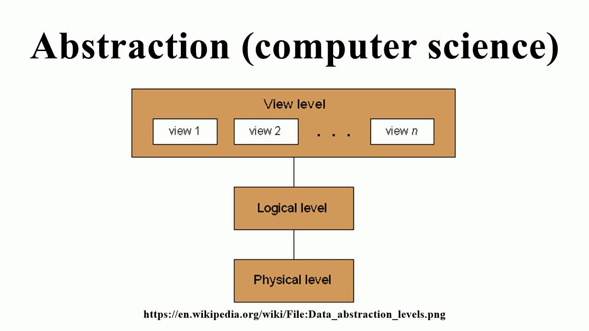

"All problems in computer science can be solved by another abstraction"
In software engineering, abstraction is a fundamental concept that simplifies complex systems by hiding unnecessary details, allowing developers to focus on the essential aspects of a problem or system. It’s a way of managing complexity, making it easier to understand, design, and maintain software systems.
Why is Abstraction Important?
Abstraction helps to:
- Simplify complex systems: By focusing on what a system does rather than how it does it, developers can handle large systems more easily.
- Improve code readability: Abstracting details makes code easier to read and maintain by separating high-level operations from low-level details.
- Promote code reusability: When common functionalities are abstracted, they can be reused across different parts of the program or even in different projects.
- Enhance maintainability: Abstracting certain operations ensures that if something changes in the system, the changes are isolated, making maintenance easier.
Levels of Abstraction
- High-level abstraction: This involves focusing on broad, system-level functionalities. For example, describing an object like "Car" without worrying about its internal components such as the engine or transmission.
- Low-level abstraction: Here, the focus is on the detailed, underlying mechanisms. For instance, within the "Car" object, low-level abstraction would deal with how the engine or transmission works.
Examples of Abstraction in Software
-
Object-Oriented Programming (OOP): In OOP, abstraction is
achieved through classes and objects. A class like Car abstracts the
idea of a car without detailing its internal parts. Methods like
startEngine()oraccelerate()describe what the car does, without explaining how each part of the car works. -
APIs: HWhen using an API, developers don’t need to know how
the internal server processes data. They only need to understand the
functions the API exposes, such as
getUser()orsendPayment(), which abstract away the internal workings. - File Systems: When you interact with files on your computer, you think in terms of creating, reading, or writing to a file. The complexity of how the data is stored on the hard drive, or how the file system organizes it, is abstracted away.
Conclusion
Abstraction is a powerful tool in software engineering that helps to manage complexity by focusing on the essential details while hiding the irrelevant ones. It allows developers to build systems that are easier to understand, maintain, and scale. Whether it's in programming languages, APIs, or system design, abstraction is at the heart of effective software development.